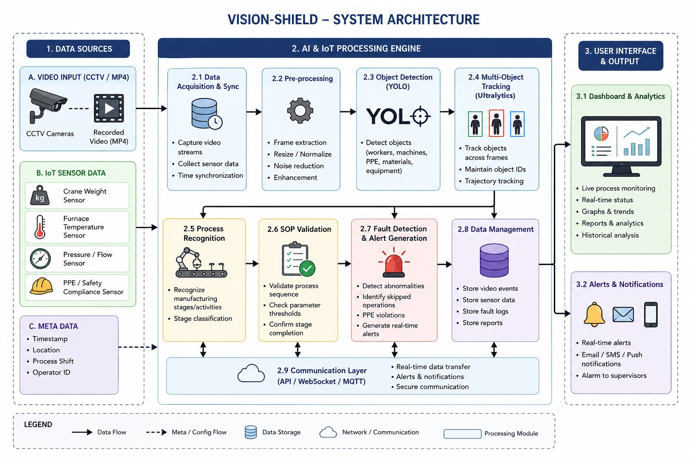
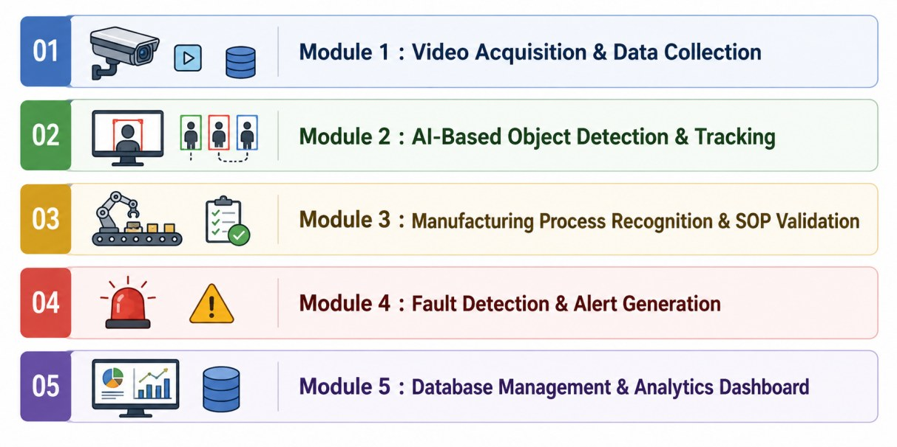
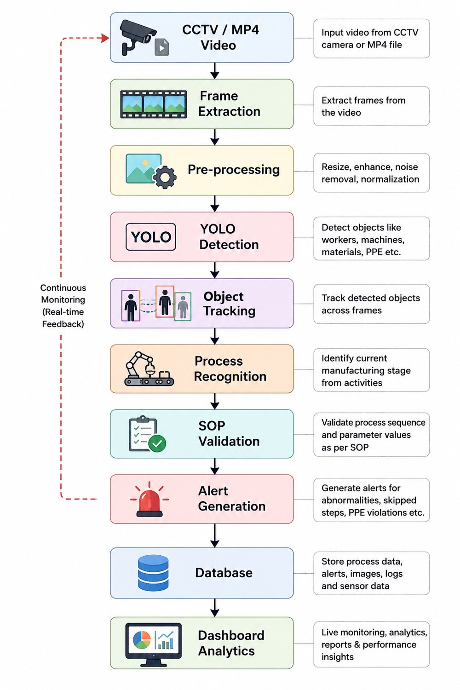
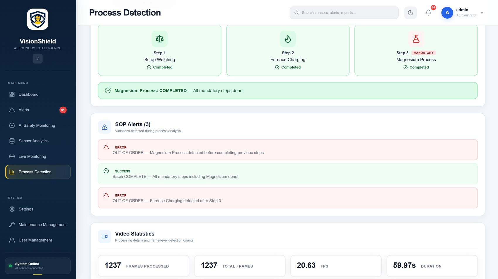
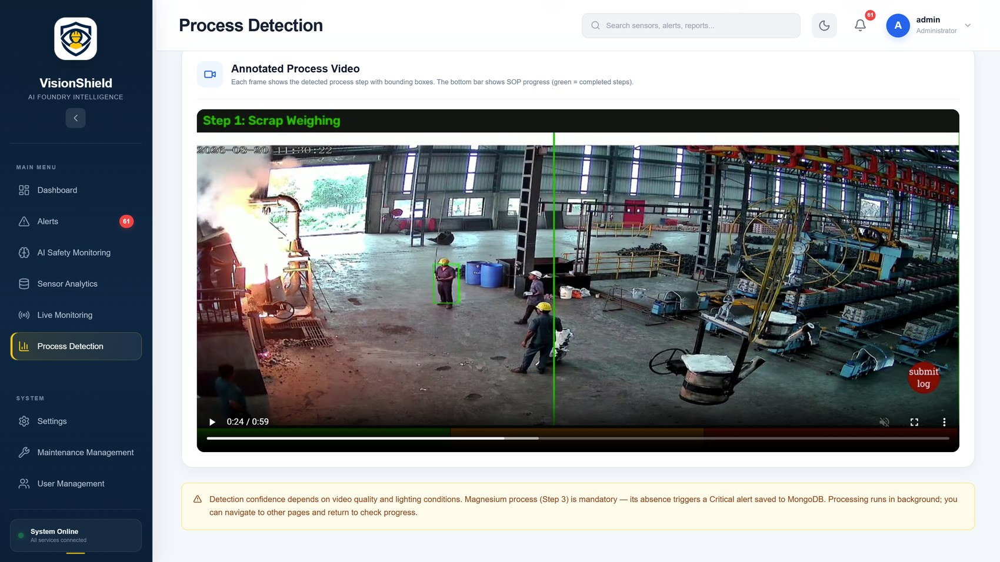
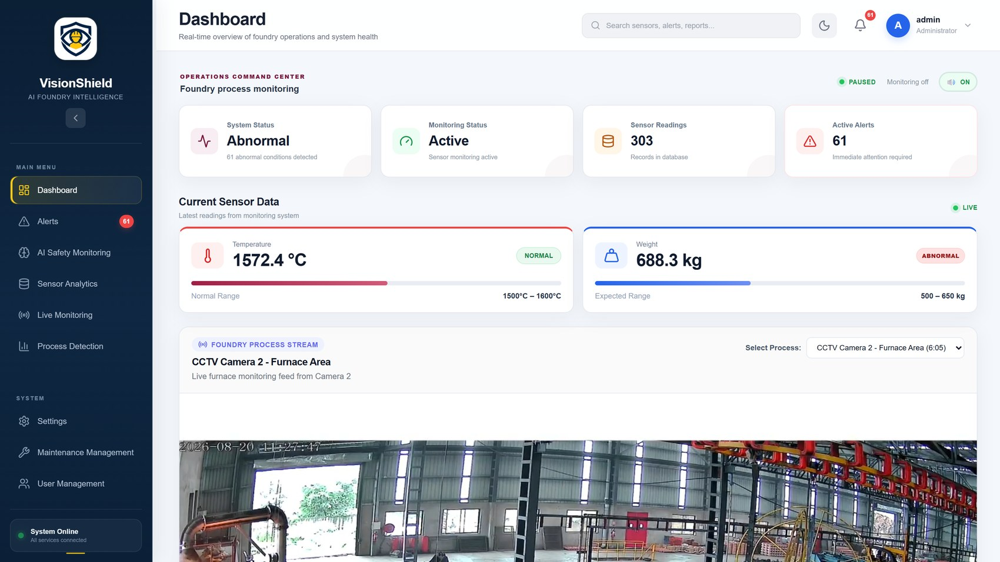
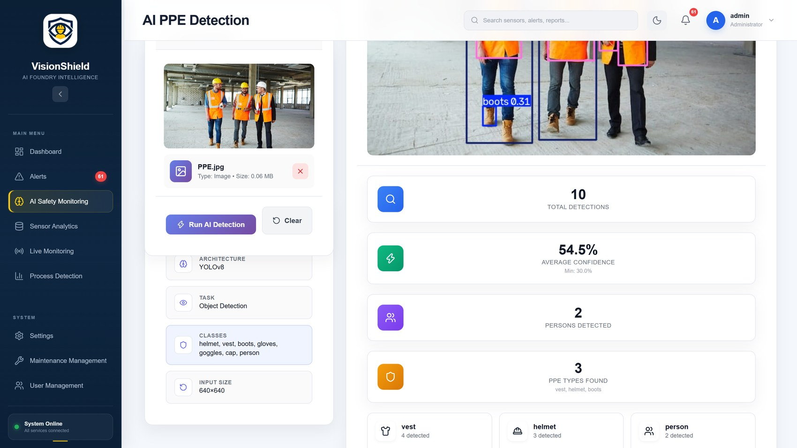
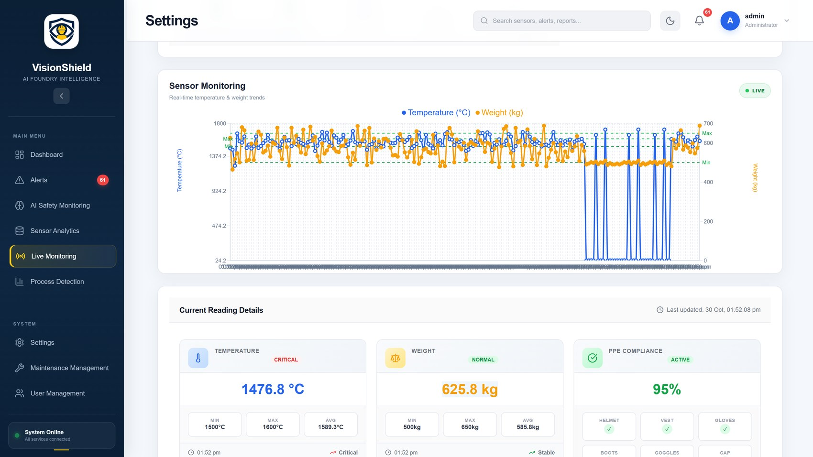

1Abstract
VisionShield monitors foundry operations with computer vision and sensor data. A YOLOv8 model detects workers and protective equipment, three trained process models verify that the casting steps follow the SOP – including the mandatory magnesium treatment – and the system raises alerts when temperature or weight leaves the safe range. Everything is available on a role-based web dashboard backed by MongoDB.
2Problem Statement
- Manual monitoring is slow and prone to human error
- Skipped or wrong process steps reduce product quality
- Safety violations (missing PPE) can go unnoticed
- No real-time alerts or traceability for root-cause analysis
3Objectives
- Monitor the foundry process automatically
- Detect PPE compliance and process abnormalities in real time
- Verify the SOP step sequence
- Generate real-time alerts, reports and analytics
- Improve product quality and worker safety
4System Architecture

VisionShield system architecture
5Five Integrated Modules


Processing workflow
How it works
- Video and sensor data are collected
- YOLOv8 detects people and PPE; tracking keeps object IDs
- Three models recognise process steps: Scrap Weighing, Furnace Charging, Magnesium
- SOP order and mandatory steps are validated
- Faults raise alerts, stored in MongoDB and sent by e-mail
6Results
1,237frames analysed in the test process video
3SOP models run together
10PPE detections on the test image
24/32test cases passed, 0 failed

SOP sequence verified from video

Annotated output video
7Working System

Dashboard – status, sensor readings and alerts

AI PPE detection

Live monitoring charts
8Technology
React + ViteFastAPIMongoDB AtlasYOLOv8 (Ultralytics)OpenCVPyTorchPython 3.13
- Role-based access: Administrator, Supervisor, Operator
- E-mail alerts, equipment maintenance and user management
9Conclusion
All five modules are integrated into a working web application and were tested with real foundry footage. Future work: live RTSP cameras, ESP32 sensors, model accuracy evaluation (mAP) and larger real-factory datasets.
10Source Code & Demo
Scan for the GitHub repositorygithub.com/bargirsufiya/VisionShield